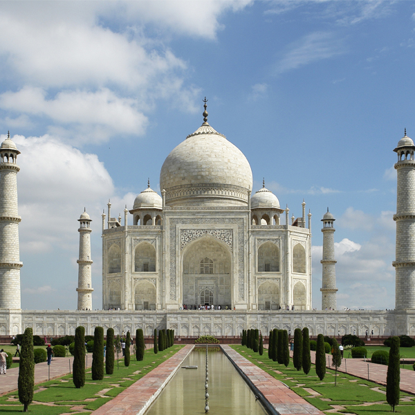

The Taj Mahal is a white marble mausoleum located in Agra, India. It was built by the Mughal Emperor Shah Jahan in memory of his beloved wife Mumtaz Mahal and is considered one of the greatest examples of Mughal architecture, a blend of Indian, Persian, and Islamic styles.
The Taj Mahal is one of the world's most famous buildings and is widely considered to be one of the most beautiful. It is also one of the Seven Wonders of the World and is a UNESCO World Heritage Site.

Do you want to learn more about the Taj Mahal?
Construction of the Taj Mahal began in 1632 and was completed in 1653. The white marble was sourced from quarries near the city of Agra, and the precious stones and other materials used in the decoration were brought from all over India and central Asia.
The Taj Mahal is a symmetrical building with a large central dome surrounded by four smaller domes. The main tomb is surrounded by intricate carvings and inlaid with precious stones. The gardens and surrounding buildings are also beautifully decorated, with fountains, pools, and ornate arches.